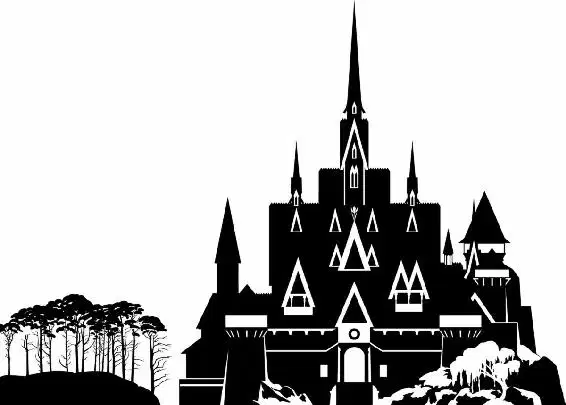

Elsa burst into the courtyard. She was so afraid now that her secret was out. She hoped she hadn’t hurt anyone. Regardless, everyone in Arendelle would soon know about her magic.
“There she is!” cried a townswoman, excited to get a glimpse of the newly crowned queen. The woman obviously had no idea what had just happened in the ballroom. “Your Majesty! Long live the queen! Queen Elsa!”
Elsa backed away from the woman and quickly weaved through the crowd, trying hard not to touch anyone as she backed away. She didn’t want to cause any harm with her powers. She just wanted to leave the kingdom and hide!
A young woman with a small child in her arms called to her. “Your Majesty, are you all right?” she asked, full of concern.
Elsa put her hands behind her and moved away. She slowly walked backward, accidentally bumping into the fountain in the center of the courtyard. As soon as she touched the fountain, the water in it froze to solid ice.
There was a loud gasp from the villagers. People turned and ran away from Elsa.
The Duke and his guards ran down the castle steps. “There she is!” he shouted, leading the charge toward Elsa. “Get her!”
“Just stay away from me! Stay away!” Elsa cried. She held her hands up, causing the castle steps to ice over. The Duke’s guards slipped and tumbled down to the ground.
“Monster!” the Duke hissed.
The crowd panicked. A swirl of cold air traveled through Arendelle as Elsa ran along the streets, leaving ice and snow in her wake.
Anna watched from the castle gates. “Elsa!” she called. “Wait, please!” She rushed from the castle and ran after Elsa. Hans trailed behind her. “Elsa!” Anna cried desperately.
Elsa looked over her shoulder as she neared the water. When she turned, her foot touched the lapping waves — and the water in the fjord immediately froze. She took another cautious step... and another sheet of ice bloomed under her foot.
“Elsa!” Anna called after her.
Feeling her panic grow, Elsa ran across the fjord. With each step, more water froze underneath her. Soon she was moving at full speed, heading toward the mountains on the other side of the lake. As she passed, the ships belonging to the visiting dignitaries creaked and locked into place, frozen in the ice. The gorgeous summer day had turned into a growing winter storm.
“Elsa, stop!” Anna pleaded. She rushed onto the fjord after her sister but slipped on the ice. She was too far behind to catch up.
Hans reached out for Anna and helped her to stand. “Anna, are you all right?” he asked.
They both watched as Elsa reached the far shore and made her way into the mountains. Anna strained to see the path Elsa had taken.
“Did you know?” Hans asked Anna.
“No,” Anna replied. Then she nodded. “But it makes so much sense.”
They walked back through the village and overheard the Duke speaking. He was addressing a growing crowd of concerned people. “The queen has cursed this land,” he said. “She must be stopped! You must go after her!”
Anna rushed over to him. “No!” she shouted. “No one is to go anywhere.”
“You!” The Duke shook a finger at Anna. “Is there sorcery in you, too?” he shouted. “Are you a monster, too?”
“No, I’m completely ordinary,” Anna replied.
Hans took her hand. “That’s right, she is,” he told the Duke.
“And my sister is not a monster,” Anna added.
The Duke scowled. “She nearly killed me,” he said dramatically.
“You slipped on ice,” Hans pointed out.
Anna stepped forward. “It was an accident. She was scared. She didn’t mean it. She didn’t mean any of this.” She paused. “All she’s ever wanted is to be perfect and good. Tonight was my fault. I pushed her. So I’m the one who needs to go after her.” Anna turned to her royal guards. “Bring me my horse, please.”
“What? Anna, no!” Hans shouted. “It’s too dangerous.”
“I’m not afraid of Elsa,” Anna said. “I’ll bring her back and make this right.”
A royal guard brought Anna’s horse to her. She took her cloak, which was hanging over the saddle, and wrapped it around her shoulders.
“I’m coming with you,” Hans said.
“No,” Anna told him. “I need you here to take care of Arendelle.”
Hans saw the desperation in Anna’s eyes. He put his hand to his chest. “On my honor,” he said, bowing his head.
“I leave Prince Hans in charge!” Anna told the crowd.
“Are you sure you can trust her?” Hans asked as Anna mounted the horse. When Anna didn’t reply, he leaned in. “I don’t want you getting hurt.”
“She’s my sister,” Anna said. “She’d never hurt me.” Urging her horse into a gallop, Anna took off over the frozen fjord toward the mountains as snow continued to fall.
Elsa trudged up the steep North Mountain. Ever since she was a child, she had been taught to conceal her powers. Now that was all over. She felt sad and worried as she gazed back at Arendelle far below. She knew no one in Arendelle would ever see her in the same way again.
But a tiny part of her also felt relieved. Her magic had been a hard secret to keep, and she didn’t have to hide it anymore. Being alone was easier, too. She didn’t have to worry about hurting anyone.
As she continued up the mountain, her steps actually became a little lighter. Now that everyone knew what she was capable of, she was free to be herself!
With a wave of her hand, Elsa started to experiment with her magic. Snow and ice whirled around her as she created snowmen and icy patterns in the air. The farther she got from Arendelle, the more confident she felt. As she took each step, her ability to draw forth ice and cold grew stronger and more powerful.
Elsa plucked off her crown and threw it aside. She tossed her head and her tightly bound hair came loose, cascading over one shoulder in a thick, wavy braid. Twirling around, she conjured up a flowing new outfit of ice, a crystal-blue gown with a cape of gossamer frost. Snow was her element. She was the Snow Queen!
Thrilled to let her powers loose at last, Elsa found that she could do more than she realized. As released her magic, a staircase of ice extended upward ... to an exquisite ice palace that grew as she raised her arms!
This was where she would live. When the castle was finished, Elsa slammed the door. She was home at last.
